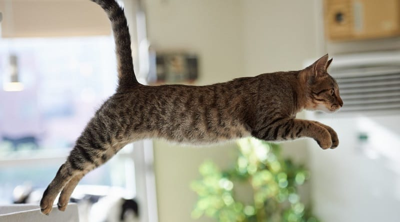
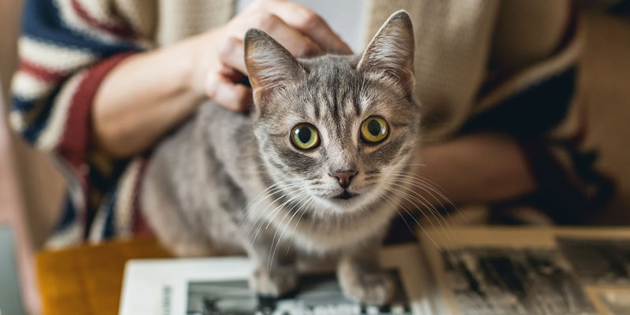

Их среда обитания
 Домашние кошки происходят от диких африканских кошек, но их естественная среда обитания стала намного более разнообразной из-за распространения их по всему миру в качестве домашних животных. Тем не менее, их дикие предки, такие как африканские дикие кошки (Felis silvestris lybica), происходят из подсахарной Африки и регионов Ближнего Востока. Эти дикие кошки предпочитают различные среды обитания, такие как саванны, степи, открытые леса и скалистые местности, где они могут находить добычу и укрываться от угроз. Они искусные охотники и адаптировали свои охотничьи привычки и поведение в зависимости от окружающей среды.
Домашние кошки происходят от диких африканских кошек, но их естественная среда обитания стала намного более разнообразной из-за распространения их по всему миру в качестве домашних животных. Тем не менее, их дикие предки, такие как африканские дикие кошки (Felis silvestris lybica), происходят из подсахарной Африки и регионов Ближнего Востока. Эти дикие кошки предпочитают различные среды обитания, такие как саванны, степи, открытые леса и скалистые местности, где они могут находить добычу и укрываться от угроз. Они искусные охотники и адаптировали свои охотничьи привычки и поведение в зависимости от окружающей среды.
Физические характеристики
 Кошки характеризуются стройными и мускулистыми телами, пропорциональными головами с относительно короткими мордами, большими и круглыми глазами, подвижными ушами и убирающимися когтями на лапах. Их шерсть может значительно отличаться по длине, цвету и рисунку, и у них может быть широкий спектр цветов глаз. Эти физические особенности делают их подходящими для охоты, восхождения и жизни как в помещении, так и на открытом воздухе.Социальное поведение
Кошки проявляют сложное социальное поведение, хотя их обычно считают независимыми животными. Некоторые ключевые моменты включают: Территориальность: Кошки территориальны и маркируют свою территорию запаховыми сигналами. Коммуникация: Они используют разнообразные сигналы, включая мяуканье, шипение и язык тела. Уход: Они уделяют ежедневное время самоуходу, как для поддержания чистоты, так и для укрепления социальных связей. Игра: Кошки играют, чтобы улучшить навыки охоты и общаться с другими кошками и людьми.